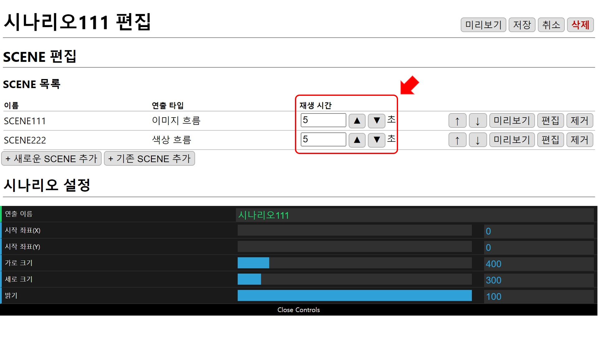
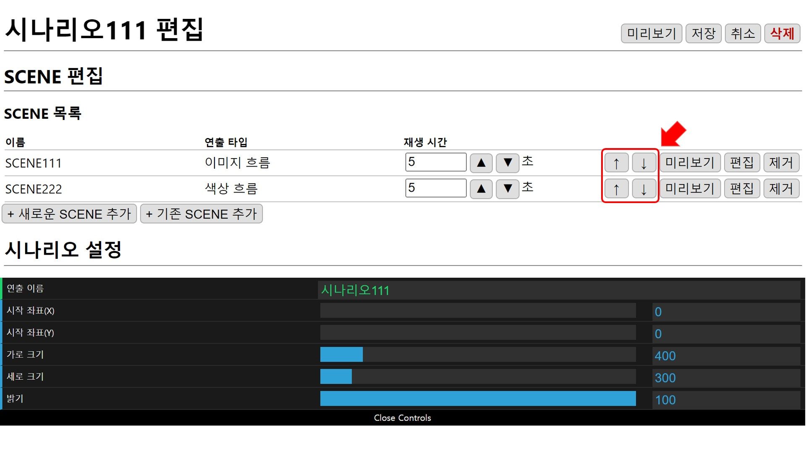
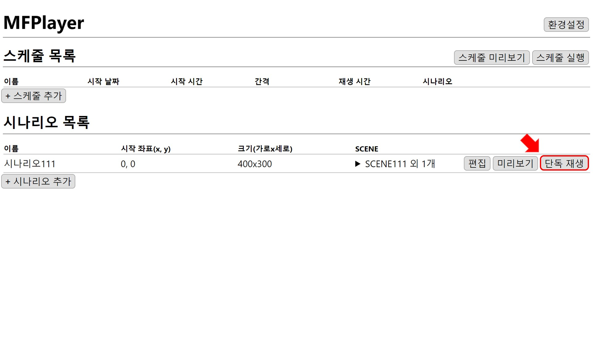
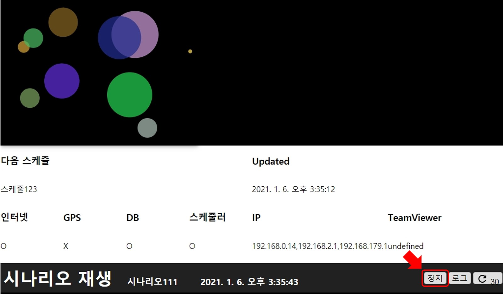

시나리오 설정하기
시나리오의 기본 재생을 설정하는 예제입니다.
시나리오 설정
재생 시간
SCENE의 재생 시간을 ▲ ▼ 버튼을 이용해 0.1 초 단위로 조절합니다.
한 개 SCENE을 최소 0.5초, 최대 86400초(24시간)으로 설정할 수 있습니다.

재생 순서
SCENE의 재생 순서는 SCENE 목록에 추가된 순서이고 ↑ ↓ 버튼을 이용해 변경할 수 있습니다.

시나리오 미리보기
시나리오 편집 완료 후 미리보기 버튼을 누르면 재생 화면이 나타나 편집 결과를 확인할 수 있습니다.
미리보기 정지 버튼을 누르면 재생 화면이 닫힙니다.

시나리오에 설정된 상태로 먼저 SCENE111이 5초동안 재생되고 그다음SCENE222이 5초동안 재생됩니다.
단독 재생
홈 화면의 목록에서 단독 재생 버튼을 누르면 편집창이 닫히고, 시나리오가 재생되기 시작합니다.

시나리오가 재생되면서 하단에 제어창이 열립니다. 제어창에서 정지 버튼을 누르면 다시 편집창으로 돌아갈 수 있습니다.

재생 시간 제어
스케줄 재생을 이용하면 시나리오의 재생시간이 제어됩니다. 스케줄 재생 챕터에서 재생 시간 설정에 대한 자세한 내용을 설명하겠습니다.